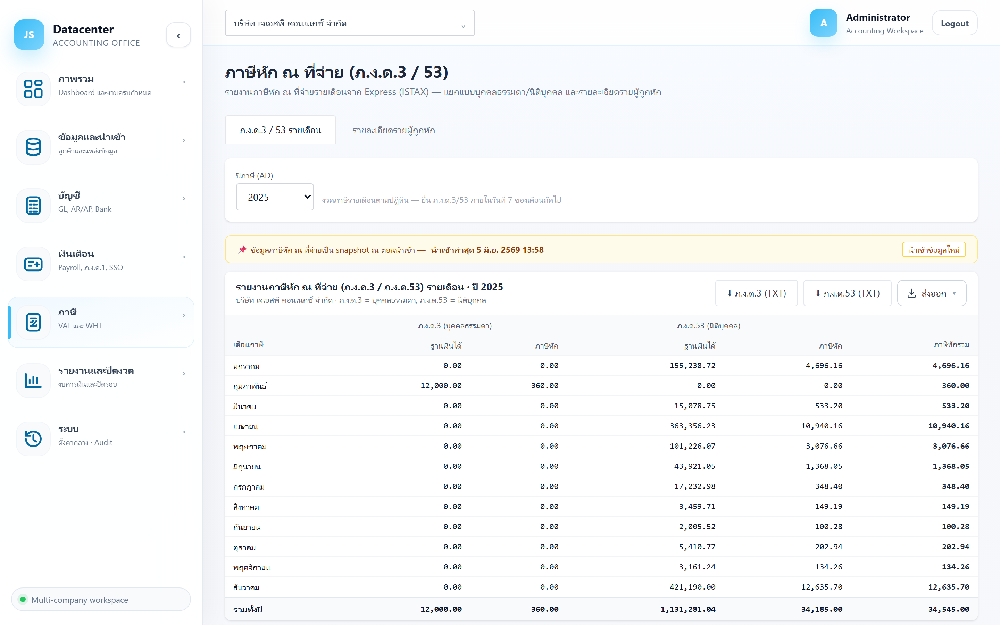
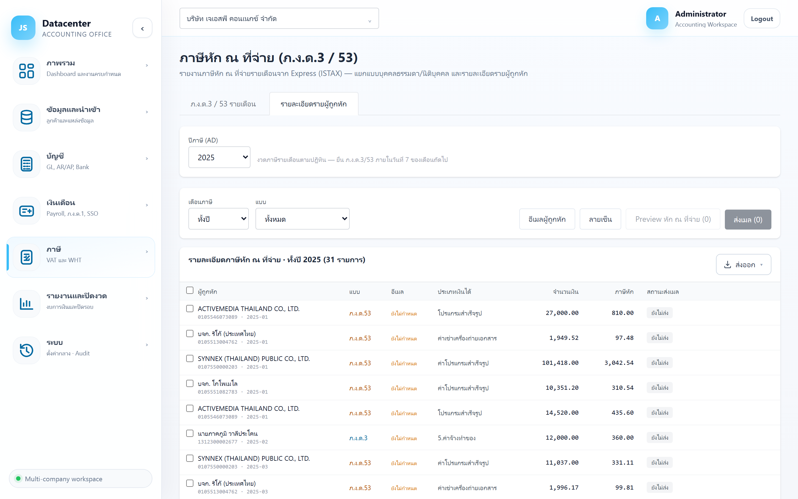

ภาษีหัก ณ ที่จ่าย (ภ.ง.ด.3 / 53)
สรุปภาษีหัก ณ ที่จ่ายรายเดือนจาก Express (ISTAX) แยกแบบบุคคลธรรมดา/นิติบุคคล พร้อม ไฟล์ TXT สำหรับยื่น และ ส่งหนังสือรับรอง 50 ทวิ ทางอีเมลให้ผู้ถูกหักได้จากหน้านี้เลย
ภ.ง.ด.3 = หักจาก บุคคลธรรมดา · ภ.ง.ด.53 = หักจาก นิติบุคคล — ระบบแยกให้อัตโนมัติตามข้อมูลผู้ถูกหักใน Express ไม่ต้องเลือกเอง
ยื่น ภ.ง.ด.3 / 53 ภายในวันที่ 7 ของเดือนถัดไป (ยื่นออนไลน์ได้ถึงวันที่ 15) — งานนี้จะขึ้นเตือนที่ Dashboard และปฏิทินงานให้ด้วย
1. การเข้าใช้งาน
- เลือกบริษัทลูกค้า ที่แถบด้านบน
- เปิดเมนู ภาษี → หัก ณ ที่จ่าย
- เลือก ปีภาษี (ค.ศ.) — แสดงเฉพาะปีที่มีข้อมูลจริง ระบบเลือกปีล่าสุดให้อัตโนมัติ
เหมือน ภ.พ.30 — ม.ค.–ธ.ค. ไม่ผูกกับรอบปีบัญชีของบริษัท
2. แท็บ “ภ.ง.ด.3 / 53 รายเดือน”

| คอลัมน์ | ความหมาย |
|---|---|
| เดือนภาษี | งวดรายเดือน — เดือนที่ไม่มีรายการจะเป็นสีเทาจาง |
| ภ.ง.ด.3 — ฐานเงินได้ | ยอดเงินที่จ่ายให้บุคคลธรรมดาและถูกหักภาษี |
| ภ.ง.ด.3 — ภาษีหัก | ภาษีที่หักไว้จากบุคคลธรรมดา |
| ภ.ง.ด.53 — ฐานเงินได้ | ยอดเงินที่จ่ายให้นิติบุคคลและถูกหักภาษี |
| ภ.ง.ด.53 — ภาษีหัก | ภาษีที่หักไว้จากนิติบุคคล |
| ภาษีหักรวม | ยอดที่ต้องนำส่งกรมสรรพากรของเดือนนั้น |
ปุ่มดาวน์โหลด
| ปุ่ม | ได้อะไร |
|---|---|
| ⬇ ภ.ง.ด.3 (TXT) | ไฟล์ข้อความสำหรับอัปโหลดยื่น ภ.ง.ด.3 (ชื่อไฟล์ pnd3-{ปี พ.ศ.}.txt) — แสดงเมื่อมีรายการ |
| ⬇ ภ.ง.ด.53 (TXT) | ไฟล์สำหรับยื่น ภ.ง.ด.53 (pnd53-{ปี พ.ศ.}.txt) |
| ส่งออก | ตารางสรุป 12 เดือนเป็น Excel / CSV / PDF |
3. แท็บ “รายละเอียดรายผู้ถูกหัก”
รายการหักภาษีทีละรายการ — และเป็นที่ที่ใช้ ส่งหนังสือรับรอง 50 ทวิ ให้ผู้ถูกหัก

| ตัวกรอง | ค่าที่เลือกได้ |
|---|---|
| เดือนภาษี | ทั้งปี (ค่าตั้งต้น) หรือเลือกเดือนใดเดือนหนึ่ง |
| แบบ | ทั้งหมด / ภ.ง.ด.3 (บุคคลธรรมดา) / ภ.ง.ด.53 (นิติบุคคล) |
| คอลัมน์ | ความหมาย |
|---|---|
| ผู้ถูกหัก | ชื่อพร้อมคำนำหน้า และบรรทัดเล็กบอกเลขผู้เสียภาษี · เดือนภาษี — มีช่องติ๊กเลือกด้านหน้า |
| แบบ | ภ.ง.ด.3 (ฟ้า) หรือ ภ.ง.ด.53 (เหลือง) |
| อีเมล | อีเมลผู้ถูกหัก — ถ้าขึ้น ยังไม่กำหนด จะส่งเมลให้รายนั้นไม่ได้ |
| ประเภทเงินได้ | ประเภทเงินได้ตามที่ระบุใน Express เช่น ค่าบริการ ค่าเช่า |
| จำนวนเงิน / ภาษีหัก | ฐานเงินได้และภาษีที่หักไว้ |
| สถานะส่งเมล | ดูตารางสถานะด้านล่าง |
| สถานะส่งเมล | ความหมาย |
|---|---|
| ยังไม่ส่ง | ยังไม่เคยส่งหนังสือรับรองฉบับนี้ |
| กำลังส่ง | ระบบกำลังส่งอยู่ |
| ส่งแล้ว | ส่งสำเร็จ — มีบรรทัดเล็กบอกวันเวลาและชื่อผู้ส่ง |
| ส่งไม่สำเร็จ | ส่งไม่ผ่าน — มีข้อความบอกสาเหตุใต้ป้าย |
ระบบผูกสถานะส่งเมลไว้กับตัวรายการ ไม่ใช่กับรอบนำเข้า — นำเข้าข้อมูลจาก Express ใหม่แล้ว รายการที่ส่งไปแล้วจะยังขึ้นว่า “ส่งแล้ว” เหมือนเดิม ไม่ต้องกลัวส่งซ้ำ
4. ส่งหนังสือรับรองหัก ณ ที่จ่าย (50 ทวิ)
งานนี้ทำ 3 ขั้น: เตรียมอีเมล → เตรียมลายเซ็น → เลือกรายการแล้วส่ง
4.1 ปุ่ม “อีเมลผู้ถูกหัก”
เปิดหน้าต่างรวมผู้ถูกหักทุกรายที่อยู่ในตารางตอนนั้น (ชื่อ · เลขผู้เสียภาษี · อีเมล) — กรอกหรือแก้อีเมลแล้วบันทึก อีเมลนี้จะถูกใช้ตอนส่งหนังสือรับรอง
ระบบดึงอีเมลที่ Express เก็บแฝงไว้ในช่องหมายเหตุของทะเบียนคู่ค้ามาให้ก่อน — รายที่ไม่มีจะขึ้นว่า “ยังไม่กำหนด” ให้กรอกเพิ่มที่หน้าต่างนี้
4.2 ปุ่ม “ลายเซ็น”
อัปโหลดภาพลายเซ็นของผู้มีหน้าที่หักภาษี ใช้แนบเหนือเส้นลงชื่อในหนังสือรับรอง
| ข้อกำหนดไฟล์ | รายละเอียด |
|---|---|
| ชนิดไฟล์ | PNG หรือ JPG เท่านั้น |
| ขนาด | ไม่เกิน 2 MB |
| แนะนำ | ใช้ PNG พื้นหลังโปร่งใส จะได้ผลลัพธ์สวยที่สุด |
ลายเซ็นเก็บแยกรายบริษัท อัปโหลดครั้งเดียวใช้ได้ตลอด และลบออกได้ในหน้าต่างเดียวกัน
4.3 พรีวิวก่อนส่ง
ติ๊กเลือกรายการที่ต้องการ (ติ๊กที่หัวตารางเพื่อเลือกทั้งหมด) แล้วกด Preview หัก ณ ที่จ่าย (จำนวน) เพื่อดูหนังสือรับรอง 50 ทวิ ที่ระบบสร้างให้ก่อนส่งจริง
ตรวจว่าชื่อบริษัท เลขผู้เสียภาษี ประเภทเงินได้ และลายเซ็นขึ้นถูกต้อง — เพราะเมื่อส่งออกไปแล้วเรียกคืนไม่ได้
4.4 ส่งอีเมล
กด ส่งเมล (จำนวน) จะมีให้เลือก 2 รูปแบบ
| รูปแบบ | ใช้เมื่อไร |
|---|---|
| รวมตามผู้ถูกหัก | ส่ง 1 อีเมลต่อผู้ถูกหัก 1 ราย ถ้ารายนั้นมีหลายฉบับจะแนบรวมส่งครั้งเดียว — ใช้อีเมลที่กำหนดไว้รายผู้ถูกหัก (ใช้กรณีปกติ) |
| รวมส่งเมลเดียว | แนบทุกฉบับที่เลือกในอีเมลฉบับเดียว ส่งไปยังอีเมลเดียวที่ระบุ — เหมาะกับส่งเข้าอีเมลกลางของบริษัทคู่ค้า หรือส่งกลับให้ตัวเองเก็บ |
ติ๊ก จำเป็นค่าเริ่มต้น ได้ ระบบจะจำรูปแบบและอีเมลที่ใช้บ่อยไว้ให้ในครั้งถัดไป (จำแยกรายบริษัท)
หลังส่งเสร็จจะมีกล่อง ผลการส่งอีเมล สรุปรายคน — ✓ เขียว = สำเร็จ, ✗ แดง = ไม่สำเร็จพร้อมสาเหตุ
5. ขั้นตอนงานประจำเดือน
- นำเข้าข้อมูลจาก Express ให้ครอบคลุมเดือนที่จะยื่น
- ดูแท็บรายเดือน ตรวจยอดภาษีหักรวมของเดือนนั้น
- ดาวน์โหลดไฟล์ TXT ของแบบที่มีรายการ แล้วนำไปยื่นที่เว็บกรมสรรพากร
- ไปแท็บรายละเอียด กรองเป็นเดือนนั้น ตรวจอีเมลผู้ถูกหักให้ครบ
- พรีวิว แล้ว ส่งหนังสือรับรอง 50 ทวิ ให้ผู้ถูกหัก
- ปิดงานในระบบ ที่ Dashboard — งาน ภ.ง.ด.3 และ ภ.ง.ด.53 ของเดือนนั้น
6. ปัญหาที่พบบ่อย
| อาการ | สาเหตุและวิธีแก้ |
|---|---|
| ขึ้น “ไม่มีข้อมูลภาษีหัก ณ ที่จ่าย…” | ยังไม่ได้นำเข้าไฟล์ ISTAX ของปีนั้นจาก Express |
| ปุ่มดาวน์โหลด TXT ไม่ขึ้น | ปีนั้นไม่มีรายการของแบบนั้นเลย (เช่น ไม่เคยหักจากบุคคลธรรมดา ปุ่ม ภ.ง.ด.3 จะไม่แสดง) |
| ปุ่ม “ส่งเมล” กดไม่ได้ | ยังไม่ได้ติ๊กเลือกรายการ — เลือกอย่างน้อย 1 รายการก่อน |
| ส่งไม่สำเร็จบางราย | ดูสาเหตุใต้ป้ายสถานะ — ส่วนใหญ่คือยังไม่กำหนดอีเมล หรืออีเมลผิดรูปแบบ แก้ที่ปุ่ม “อีเมลผู้ถูกหัก” แล้วส่งเฉพาะรายนั้นซ้ำ |
| หนังสือรับรองไม่มีลายเซ็น | ยังไม่ได้อัปโหลดลายเซ็น — กดปุ่ม “ลายเซ็น” แล้วอัปโหลด PNG/JPG |
| อยากส่งซ้ำให้รายที่เคยส่งแล้ว | ติ๊กเลือกรายการนั้นแล้วกดส่งได้ตามปกติ — ระบบจะอัปเดตเวลาส่งล่าสุดให้ |
ภาษีเงินได้นิติบุคคลปลายปี — ภ.ง.ด.50 →